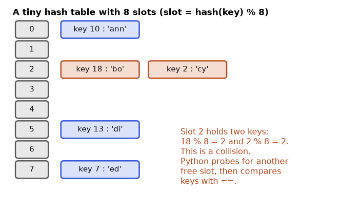

collections Module and Friendsitertools and functools: Ready-Made Loop ToolsAn online shop records thousands of delivery times. To answer "which product is delivered slowest?" you must group numbers by item, count them, sort them, remove duplicates and find the top few. In Python every one of those jobs has a ready-made container or tool, and picking the right one can make a program 100 times faster or ten times shorter. In this chapter you learn the four core containers (list, tuple, set, dict), the one-line loops called comprehensions, and three standard-library modules that professionals use every day. By the end you will group, count, rank and deduplicate data without writing clumsy loops.
Running example. The same shop delivery records as before, as (item, delivery_mins) pairs, where the number is minutes from order to doorstep. Keep this table in your head:
| item | delivery_mins |
|---|---|
| book | 480 |
| lamp | 3100 |
| book | 310 |
| lamp | 60 |
| shoes | 1250 |
| book | 290 |
[a, b, c]: ordered, mutable, can hold anything (even mixed types). Indexing and slicing work exactly like strings (Chapter 3).(a, b): ordered, immutable. A one-item tuple needs a trailing comma: (5,). Without it, (5) is just the number 5.s.item).len, in, +, *, min, max, sum (numbers), count, index.Main list methods:
| Method | What it does | Returns |
|---|---|---|
append(x) | add one item at the end | None |
extend(iterable) | add many items at the end | None |
insert(i, x) | insert before position i | None |
pop() / pop(i) | remove and return the last / the i-th item | the item |
remove(x) | remove the first item equal to x | None |
sort(key=, reverse=) | sort in place | None |
sorted(list) | a new sorted list | new list |
reverse() | reverse in place | None |
Notice that methods that change the list in place return None. This is a deliberate signal: "I changed the thing, there is no new thing."
Predict: After mins.sort(reverse=True), which index does the value 480 have?
mins = [480, 1250, 3100, 310, 60]
mins.append(95)
mins.extend([700, 220])
mins.insert(0, 5)
print(mins, len(mins))
print(mins[0], mins[-1], mins[1:4])
last = mins.pop()
first = mins.pop(0)
mins.remove(95)
print(last, first, mins)
copy_sorted = sorted(mins)
print(copy_sorted, mins)
mins.sort(reverse=True)
print(mins, mins.index(480), mins.count(60), min(mins), max(mins), sum(mins))
try:
mins.remove(9999)
except ValueError as e:
print("ValueError:", e)
try:
mins[100]
except IndexError as e:
print("IndexError:", e)Real output:
[5, 480, 1250, 3100, 310, 60, 95, 700, 220] 9
5 220 [480, 1250, 3100]
220 5 [480, 1250, 3100, 310, 60, 700]
[60, 310, 480, 700, 1250, 3100] [480, 1250, 3100, 310, 60, 700]
[3100, 1250, 700, 480, 310, 60] 3 1 60 3100 5900
ValueError: list.remove(x): x not in list
IndexError: list index out of rangeStep by step:
insert(0, 5) put the 5 in front.pop() removed 220 (last), pop(0) removed 5 (first), remove(95) deleted the value 95. Six items remain.sorted(mins) made a new list and left mins unchanged. mins.sort(reverse=True) changed mins itself. After sorting, 480 is at index 3 (after 3100, 1250, 700).ValueError or IndexError. Read the message: it tells you what was missing.pt = (480, "book")
one = (5,)
print(type((5)), type(one), pt[0])
item_mins, name = pt
from collections import namedtuple
S = namedtuple("S", "item mins")
s = S("book", 480)
print(s, s.item, s[1], s._asdict())Real output:
<class 'int'> <class 'tuple'> 480
S(item='book', mins=480) book 480 {'item': 'book', 'mins': 480}(5) is an int; (5,) is a tuple. The comma makes the tuple, not the brackets.namedtuple lets you read s.item instead of s[0]. Code with names is much easier to read. In Chapter 8 you will meet dataclass, which is the more modern choice for records. list [ 480 | 1250 | 3100 | 310 | 60 ] can grow, shrink, reorder
index 0 1 2 3 4
neg -5 -4 -3 -2 -1
tuple ( "book", 480 ) fixed shape, one recordA list is a row of numbered boxes. Python stores in each box not the value itself but a reference to it (Chapter 1), so a list of 1,000 items holds 1,000 arrows.
| Container | Example | Where it appears in the job |
|---|---|---|
| list | all delivery times of one day | Column of data before it becomes a DataFrame |
| tuple | (item, mins) one row | Rows returned by a database cursor |
| namedtuple | S("book", 480) | Light records with readable fields |
| list as stack | append / pop | Undo, parsing nested brackets |
(1000, 20).sorted_list = mins.sort(). sort() returns None, so sorted_list becomes None. Use sorted(mins) when you want a new list. Another: list.pop(0) and list.insert(0, x) on a huge list are slow (every item shifts). Use deque (Section 4.4).Check yourself
type((7)) and type((7,))?Answer: int and tuple.
[1, 2, 3].append(4) return?Answer: None. It changes the list in place.
Answer: A tuple is immutable (hashable); a list can change, so Python refuses to hash it.
{a, b}: unordered, no duplicates, mutable. An empty set is set(), because {} makes an empty dict.a | b union, a & b intersection, a - b difference, a ^ b symmetric difference (in exactly one), a <= b subset.Predict: a has three product names and b has two. How many items are in a ^ b?
a = {"book", "shoes", "lamp"}
b = {"lamp", "pen"}
print(sorted(a | b), sorted(a & b), sorted(a - b), sorted(a ^ b))
print("lamp" in a, len(a), {1, 2} <= {1, 2, 3}, a.isdisjoint({"x"}))
print(set([1, 1, 2, 2, 3]), sorted(set("hello")))
print({frozenset([1, 2]): "ok"})
print(type({}), type(set()))
try:
{[1, 2]}
except TypeError as e:
print("TypeError:", e)Real output:
['book', 'lamp', 'pen', 'shoes'] ['lamp'] ['book', 'shoes'] ['book', 'pen', 'shoes']
True 3 True True
{1, 2, 3} ['e', 'h', 'l', 'o']
{frozenset({1, 2}): 'ok'}
<class 'dict'> <class 'set'>
TypeError: cannot use 'list' as a set element (unhashable type: 'list')lamp is in both. a ^ b has 3 names: book, shoes, pen (the ones in exactly one set).sorted(...) when printing because the printed order of a set is not guaranteed and can change between runs for text values. Never depend on set order.set("hello") has only 4 letters, because the second l is dropped. {} is a dict, set() is the empty set.Problem 4.2.1 You have 200,000 IDs and must ask "is 199,999 in the collection?" 200 times. Compare a list and a set.
| Step 1 | Build both: big = list(range(200_000)) and bigset = set(big). |
|---|---|
| Step 2 | Time 200 lookups of the last item in each. In a list, Python compares the item with each element from the left: up to 200,000 comparisons per lookup. In a set it hashes the item once. |
| Step 3 | Compare the two times as a ratio. |
| Answer | In my run the list was more than 100 times slower (the script printed True for "ratio above 100"). The exact ratio depends on your machine; I measured only that it exceeds 100. |
| Check | The code is below. Run it yourself and print tl/ts to see your own number. |
| Why it matters | A join or a filter such as "keep rows whose id is in this other list" can take minutes with a list and under a second with a set. This is the single most useful speed-up for a beginner. |
import time
big = list(range(200_000)); bigset = set(big)
t=time.perf_counter(); [199_999 in big for _ in range(200)]; tl=time.perf_counter()-t
t=time.perf_counter(); [199_999 in bigset for _ in range(200)]; ts=time.perf_counter()-t
print("list slower than set by more than 100x:", tl/ts > 100)list slower than set by more than 100x: True list lookup: [ . . . . . . . . . X ] walk from the left: many steps
set lookup: hash("X") -> drawer 7 -> open drawer 7 -> found| Set idea | Example | Where it appears in the job |
|---|---|---|
| deduplicate | set(user_ids) | Unique visitors, distinct customers |
| membership test | if id in blocked_ids | Filtering rows quickly |
a - b | products on the price list but never sold | Data reconciliation between two systems |
a & b | customers in both files | Join checks |
train_ids & test_ids must be empty).if x in big_list inside a loop). Convert once to a set. Another: expecting a set to keep order, or writing {} to create an empty set.Check yourself
Answer: set(). The literal {} is an empty dict.
{1, 2, 3} & {2, 3, 4}?Answer: {2, 3}.
x in my_set fast?Answer: Python hashes x and jumps straight to the right slot of a hash table instead of scanning.
{key: value}: maps keys to values. Keys must be hashable and unique. Values can be anything.d[k] raises KeyError if missing. d.get(k) returns None; d.get(k, default) returns your default.d.setdefault(k, default) returns d[k], first inserting the default if the key is missing.keys(), values(), items() give views (live windows onto the dict). items() gives (key, value) pairs.a | b (right side wins on clashes), or {**a, **b}. d.update(...) changes in place.pop(k), del d[k], d.fromkeys(keys, value), dict(zip(keys, values)).Predict: What does stat.get("zzz") return, and what does stat["zzz"] do?
stat = {"book": 480, "lamp": 3100}
stat["shoes"] = 1250
print(stat, stat["lamp"], stat.get("zzz"), stat.get("zzz", 0), len(stat))
try:
stat["zzz"]
except KeyError as e:
print("KeyError:", e)
print(list(stat), list(stat.values()), list(stat.items()))
print(stat.setdefault("pen", 0), stat)
print(stat.pop("pen"), stat.pop("nope", "none"))
print({"a": 1, "b": 2} | {"b": 3, "c": 4}, {**{"a": 1}, **{"a": 9}})
stat.update(lamp=2900)
del stat["book"]
print(stat, "lamp" in stat)
print(dict(zip("abc", [1, 2, 3])), dict.fromkeys(["a", "b"], 0))
print(sorted(stat.items(), key=lambda kv: kv[1]))Real output:
{'book': 480, 'lamp': 3100, 'shoes': 1250} 3100 None 0 3
KeyError: 'zzz'
['book', 'lamp', 'shoes'] [480, 3100, 1250] [('book', 480), ('lamp', 3100), ('shoes', 1250)]
0 {'book': 480, 'lamp': 3100, 'shoes': 1250, 'pen': 0}
0 none
{'a': 1, 'b': 3, 'c': 4} {'a': 9}
{'lamp': 2900, 'shoes': 1250} True
{'a': 1, 'b': 2, 'c': 3} {'a': 0, 'b': 0}
[('shoes', 1250), ('lamp', 2900)]Explanation:
d[k] with a missing key gives KeyError: 'zzz'. get is the safe choice when "missing" is normal.list(stat) lists the keys (looping over a dict gives keys). items() gives pairs; use for k, v in stat.items().b appears in both dicts and the right one wins: 3.sorted(stat.items(), key=lambda kv: kv[1]) sorts pairs by value: 1250 before 2900. A dict itself has no sort; you sort its items."lamp" in stat tests the keys, and is fast.Problem 4.3.1 From the running table, group the elapsed times by item and compute the average per item.
| Step 1 | Start with an empty dict. For each (item, mins), make sure the item has a list, then append mins. setdefault(item, []) does both in one line. |
|---|---|
| Step 2 | After the loop, each item maps to its list: book → [480, 310, 290], lamp → [3100, 60], shoes → [1250]. |
| Step 3 | Average = sum / count. book: (480 + 310 + 290) / 3 = 1080 / 3 = 360. lamp: (3100 + 60) / 2 = 3160 / 2 = 1580. shoes: 1250 / 1 = 1250. |
| Answer | book averages 360 mins, lamp 1580 mins, shoes 1250 mins. |
| Check | The code prints exactly these values (360.0, 1580.0, 1250.0). |
| Why it matters | Interpretation: lamp has the worst average, but with only two samples (3100 and 60) the average hides a huge spread. Always look at the spread and the count, not just the average. |
The code in 4.4 does the same with defaultdict.
key value
"book" -> 480
"lamp" -> 3100 hash("lamp") picks the slot, so lookup is O(1)
"shoes" -> 1250A dict is a two-column table where you can jump from a key to its row without scanning.
| Dict idea | Example | Where it appears in the job |
|---|---|---|
| lookup table | {"US": "United States"} | Mapping codes to names |
| record | {"id": 7, "name": "Asha"} | One JSON object from an API |
| group-by | item → list of times | Aggregations before pandas |
| config | {"timeout": 5} | Settings passed into functions |
df.to_dict(), and mapping values with Series.map(dict).{"role": ..., "content": ...}).RuntimeError: dictionary changed size during iteration. Loop over list(d) (a copy of the keys) or build a new dict. Another: using d[k] where d.get(k) is the right tool, and getting KeyError in production.Check yourself
Answer: d.get(key, 0).
{"a": 1} | {"a": 2}, what is the result?Answer: {"a": 2}. The right dict wins.
Answer: Yes, since Python 3.7.
collections Module and Friendscollections module is the power-tool shelf: a dict that makes missing lists by itself (defaultdict), a tally counter (Counter), and a queue that is fast at both ends (deque).| Tool | What it is | Use it for |
|---|---|---|
defaultdict(factory) | dict that creates a default value for a missing key by calling factory | grouping, counting |
Counter(iterable) | dict subclass that counts items; most_common(n) | frequency tables |
deque(maxlen=n) | double-ended queue; O(1) at both ends; optional fixed size | queues, sliding windows |
OrderedDict | dict with extra order tools like move_to_end | LRU-style tricks (a normal dict already keeps order) |
heapq | keeps the smallest item first (a heap) | top-N, schedulers |
bisect | binary search in a sorted list | insert while keeping sorted order |
Predict: After appending 0 to 4 into a deque(maxlen=3), which numbers remain?
from collections import defaultdict, Counter, deque, OrderedDict
rows = [("book",480),("lamp",3100),("book",310),("lamp",60),("shoes",1250),("book",290)]
dd = defaultdict(list)
for l, v in rows:
dd[l].append(v)
print(dict(dd))
print({k: sum(v)/len(v) for k, v in dd.items()})
c = Counter(l for l, _ in rows)
print(c, c.most_common(2), c["book"], c["zzz"])
print(Counter("abracadabra").most_common(3), Counter(a=3) + Counter(a=1, b=2))
q = deque(maxlen=3)
for x in range(5):
q.append(x)
print(q)
print(q.popleft())
print(q)
q.appendleft(9)
print(q)
q.rotate(1)
print(q)
import heapq, bisect
h = [5, 1, 8, 3]
heapq.heapify(h)
print(heapq.heappop(h), heapq.nsmallest(2, [5, 1, 8, 3]), heapq.nlargest(2, [5, 1, 8, 3]))
srt = [10, 20, 30, 40]
print(bisect.bisect_left(srt, 25), bisect.bisect_right(srt, 30))
bisect.insort(srt, 25)
print(srt)Real output:
{'book': [480, 310, 290], 'lamp': [3100, 60], 'shoes': [1250]}
{'book': 360.0, 'lamp': 1580.0, 'shoes': 1250.0}
Counter({'book': 3, 'lamp': 2, 'shoes': 1}) [('book', 3), ('lamp', 2)] 3 0
[('a', 5), ('b', 2), ('r', 2)] Counter({'a': 4, 'b': 2})
deque([2, 3, 4], maxlen=3)
2
deque([3, 4], maxlen=3)
deque([9, 3, 4], maxlen=3)
deque([4, 9, 3], maxlen=3)
1 [1, 3] [8, 5]
2 3
[10, 20, 25, 30, 40]defaultdict(list) creates an empty list the first time a key appears, so dd[l].append(v) needs no setdefault. The result is the same grouping as 4.3.1.Counter counts: book 3 times, lamp twice, shoes once. A missing key gives 0 (not an error). most_common(2) gives the top two. Counters can be added. In "abracadabra" the letter a appears 5 times (a-b-r-a-c-a-d-a-b-r-a: 5), b 2 times, r 2 times.deque with maxlen=3 keeps only the last 3 items: 2, 3, 4. This is a sliding window, handy for "average of the last 3 samples". rotate(1) moves items one place to the right.heapq.heappop returns the smallest item (1). nsmallest(2, ...) is [1, 3], nlargest(2, ...) is [8, 5].bisect_left(srt, 25) gives index 2: the place where 25 would go in the sorted list. insort inserts it there and keeps the list sorted. deque(maxlen=3) append(3) -> [1,2,3]
oldest falls out <-- append(4) -> [2,3,4] 1 dropped from the left| Tool | Example | Where it appears in the job |
|---|---|---|
Counter | count status codes per test run | Quick value counts, error summaries |
defaultdict | group lines by session id | ETL grouping |
deque(maxlen) | rolling window of last 100 delivery times | Moving averages, rate limits |
heapq.nlargest | 10 slowest deliveries | Top-N reports |
Counter for quick frequency checks before using pandas.deque as an in-memory buffer; heapq for merging sorted streams.Counter for word counts and class balance.defaultdict entries just to test them (if d[k]:) creates the key as a side effect. Use k in d or d.get(k) for checks. Another: using sort() after every insert; use heapq or bisect.insort.Check yourself
Counter("aab")["z"] return?Answer: 0. A missing key counts as zero.
deque([1,2,3], maxlen=3) after append(4)?Answer: 1 is dropped, so the deque is [2, 3, 4].
defaultdict(list) better than dict.setdefault?Answer: When you group many items: it avoids repeating setdefault and reads more clearly.
[expression for item in iterable if condition].{expression for ...}. Dict comprehension: {key: value for ...}.(expression for ...). It does not build a container. It produces items one at a time on demand (Chapter 7), using almost no memory.for parts. Read it left to right, like nested loops, with the outer loop first.for loop).Predict: In {l: m for l, m in zip(items, mins)}, the item book appears twice. Which value does the dict keep?
mins = [480, 1250, 3100, 310, 60]
print([x / 1000 for x in mins])
print([x for x in mins if x > 400])
print(["slow" if x > 1000 else "ok" for x in mins])
items = ["book", "shoes", "lamp", "book", "lamp"]
print({l: m for l, m in zip(items, mins)})
print(sorted({l.upper() for l in items}))
print([(i, j) for i in range(3) for j in range(i)])
matrix = [[1, 2, 3], [4, 5, 6]]
print([x for row in matrix for x in row], [[r[i] for r in matrix] for i in range(3)])
x = 10
res = [x for x in range(3)]
print(x)
print([x for x in mins if x > 100 and x < 2000], [y for x in mins if (y := x // 100) > 10])Real output:
[0.48, 1.25, 3.1, 0.31, 0.06]
[480, 1250, 3100]
['ok', 'slow', 'slow', 'ok', 'ok']
{'book': 310, 'shoes': 1250, 'lamp': 60}
['BOOK', 'LAMP', 'SHOES']
[(1, 0), (2, 0), (2, 1)]
[1, 2, 3, 4, 5, 6] [[1, 4], [2, 5], [3, 6]]
10
[480, 1250, 310] [12, 31]if x > 400). A if ... else ... that chooses a value goes at the front ("slow" if x > 1000 else "ok").book was first 480 and then 310; the dict keeps 310. Duplicated keys silently lose data, so check for duplicates before building a dict from pairs.[(i, j) for i in range(3) for j in range(i)] is the same as two loops: for each i, j goes from 0 up to i - 1. That gives (1,0), (2,0), (2,1).[x for row in matrix for x in row] (outer loop first), and transpose with [[r[i] for r in matrix] for i in range(3)].x is still 10 after the comprehension that uses x: the comprehension has its own scope.:= (Chapter 2) to compute x // 100 once and also filter on it.Predict: If I run sum(gen) twice on the same generator, will both give 30?
gen = (x * x for x in range(5))
print(type(gen).__name__, sum(gen), sum(gen))
import sys
print(sys.getsizeof([x for x in range(100000)]), sys.getsizeof(x for x in range(100000)))
print(max(mins, default=None), max([], default=None), any(x > 3000 for x in mins), all(x > 50 for x in mins))Real output:
generator 30 0
800984 200
3100 None True Truesum(gen) consumed it, the second sum(gen) finds nothing and gives 0. This is a classic surprise. 0 + 1 + 4 + 9 + 16 = 30 for the first call, which checks out.800984 bytes; the exact figure depends on your Python version). The generator object is about 200 bytes, whatever the size of the range. The generator makes numbers only when asked.any(...) and all(...) stop as soon as the answer is known. With a generator expression they do not build a list first. max(..., default=None) avoids a ValueError on empty input. [ f(x) for x in data if test(x) ]
| | |
what goes where it which items
in (output) comes from pass (filter)
equals: out = []
for x in data:
if test(x): out.append(f(x))| Form | Example | Where it appears in the job |
|---|---|---|
| list comp | [float(x) for x in row] | Converting a column of text to numbers |
| dict comp | {name: i for i, name in enumerate(vocab)} | Building lookup tables |
| set comp | {u.lower() for u in users} | Deduplicating with cleaning |
| generator | sum(len(l) for l in lines) | Streaming huge files |
fors and two ifs). If it does not fit in one readable line, use a normal loop. Also: using a comprehension just for its side effects ([print(x) for x in data]), which builds a useless list.Check yourself
if go in a list comprehension?Answer: At the end: [x for x in data if x > 0].
sum(gen) print 0?Answer: A generator is used up after one pass.
[[1,2],[3]] with a comprehension?Answer: [x for row in data for x in row].
itertools and functools: Ready-Made Loop Toolsitertools has tools for walking and combining sequences. functools has tools for treating functions as values (caching, fixing arguments, folding a list into one value).itertools tool | What it does |
|---|---|
chain(a, b) | walk a then b as one sequence |
islice(it, n) | take the first n items of any iterator |
count(start), cycle(x) | endless counters / repeaters (use with islice) |
product(a, b) | every combination, one from each (like nested loops) |
combinations(x, r), permutations(x) | choose r items, order ignored / order matters |
accumulate(x, func) | running totals (or running max) |
pairwise(x) | neighbouring pairs (Python 3.10 and newer) |
batched(x, n) | chunks of size n (Python 3.12 and newer) |
zip_longest(a, b, fillvalue=) | zip that does not stop at the shorter input |
groupby(x, key) | group adjacent equal keys |
functools tool | What it does |
|---|---|
lru_cache / cache | remember results of a function by its arguments |
partial(f, ...) | a new function with some arguments pre-filled |
reduce(f, x, start) | fold a sequence into one value by applying f repeatedly |
Predict: groupby on an unsorted list of items book, lamp, book. How many groups come out: 2 or 3?
from itertools import chain, groupby, product, combinations, permutations, islice, accumulate, count, cycle, zip_longest, pairwise, batched
print(list(chain([1,2],[3],"ab")), list(islice(count(10), 3)), list(islice(cycle("ab"), 5)))
print(list(product("ab", [1,2])), list(combinations("abc", 2)), len(list(permutations("abc"))))
print(list(accumulate([1,2,3,4])), list(accumulate([3,1,4], max)), list(pairwise([1,4,9,16])))
print(list(zip_longest([1,2,3], "ab", fillvalue="-")), list(batched(range(7), 3)))
rows = [("book",480),("book",310),("lamp",3100),("lamp",60),("shoes",1250)]
for key, grp in groupby(rows, key=lambda r: r[0]):
print(key, [v for _, v in grp])
unsorted = [("book",480),("lamp",3100),("book",310)]
print([(k, len(list(g))) for k, g in groupby(unsorted, key=lambda r: r[0])])Real output:
[1, 2, 3, 'a', 'b'] [10, 11, 12] ['a', 'b', 'a', 'b', 'a']
[('a', 1), ('a', 2), ('b', 1), ('b', 2)] [('a', 'b'), ('a', 'c'), ('b', 'c')] 6
[1, 3, 6, 10] [3, 3, 4] [(1, 4), (4, 9), (9, 16)]
[(1, 'a'), (2, 'b'), (3, '-')] [(0, 1, 2), (3, 4, 5), (6,)]
book [480, 310]
lamp [3100, 60]
shoes [1250]
[('book', 1), ('lamp', 1), ('book', 1)]accumulate([1,2,3,4]) gives running totals 1, 3, 6, 10. With max it gives a running maximum: 3, 3, 4.pairwise gives neighbours. Differences between neighbours (b - a) are easy to get from it, for example the change between consecutive measurements.product("ab", [1,2]) has 2 x 2 = 4 pairs. combinations("abc", 2) has 3 (ab, ac, bc). permutations("abc") has 3! = 6.groupby only groups neighbours. With sorted data it gives 3 groups. With the unsorted list it gives three groups, and book appears twice. Always sort by the key first, or use defaultdict. This is the number-one groupby bug.from functools import reduce, cache, partial
print(reduce(lambda a, b: a + b, [1,2,3,4]), reduce(max, [3,9,2]), reduce(lambda a, b: a*b, range(1,6), 1))
@cache
def sq(n):
print("computing", n); return n*n
print(sq(4), sq(4))
print(sq.cache_info())
hexint = partial(int, base=16)
print(hexint("ff"), hexint.func.__name__, hexint.keywords)Real output:
10 9 120
computing 4
16 16
CacheInfo(hits=1, misses=1, maxsize=None, currsize=1)
255 int {'base': 16}reduce folds: 1+2+3+4 = 10, the biggest of 3, 9, 2 is 9, and 1*2*3*4*5 = 120 (that is 5!). The start value 1 in the last call is the "nothing yet" value.@cache ran the function body once ("computing 4" printed once) and served the second call from memory. cache_info() shows 1 hit and 1 miss.partial(int, base=16) is a new function that reads hexadecimal: ff is 255 (15 x 16 + 15). lru_cache(maxsize=N) is the same as cache but forgets old entries, so memory stays bounded. groupby on sorted rows: book book | lamp lamp | shoes -> 3 groups
groupby on UNsorted rows: book | lamp | book -> 3 groups (book twice!)| Tool | Example | Where it appears in the job |
|---|---|---|
product | all combinations of 3 learning rates and 4 batch sizes | Grid search for models |
batched / islice | send 1000 rows at a time to an API | Batch loading |
accumulate | running total of revenue | Cumulative metrics |
cache | cache an expensive lookup | Speeding up repeated calls |
chain | read several files as one stream | ETL |
product to generate hyper-parameter grids; combinations for feature pairs.batched for chunked inserts; chain.from_iterable to join file streams.accumulate for running totals; pairwise for period-over-period changes.lru_cache for config and lookup caching.groupby on unsorted data (see above). Also: using @cache on a function with a changing result (like "current time" or a database read). It will return the old answer forever. Cache only pure functions: same inputs, same output.Check yourself
list(combinations("abcd", 2)) have?Answer: 6 (4 x 3 / 2).
groupby?Answer: Sort the data by the same key.
partial(int, base=2)("101") return?Answer: 5.
| Module | What it gives you | Chapter where you go deeper |
|---|---|---|
math | sqrt, ceil, floor, log10, pi, gcd, isclose | this one |
statistics | mean, median, stdev, quantiles | this one |
random | random numbers; seed makes them repeatable | this one |
time | perf_counter (timing), sleep, time (seconds since 1970) | 11 |
datetime, zoneinfo | dates, times, time zones | 5 |
os, sys, pathlib, shutil, glob, tempfile | files, paths, the system | 5 |
json, csv, sqlite3 | data formats and a small database | 5, 12 |
re, string | text patterns | 3 |
collections, itertools, functools, heapq, bisect, copy | data tools | 1, 4 |
logging, unittest, argparse, subprocess | professional tooling | 6, 10, 12 |
threading, multiprocessing, concurrent.futures, asyncio | doing many things at once | 11 |
urllib, http | web access and a tiny web server | 12 |
hashlib, uuid | fingerprints (hashes) and unique ids | 13 |
statisticsProblem 4.7.1 Ten delivery times (mins): [480, 1250, 3100, 310, 60, 290, 700, 220, 95, 540]. Find the mean, the median and the 95th percentile.
| Formula | mean = sum / count. The median is the middle value of the sorted list (average of the two middle ones when the count is even). A percentile is the value below which that percent of the data falls. The inclusive method puts the p-th percentile at position (n − 1) × p in the sorted list and blends the two neighbours. |
|---|---|
| Plug in | The sum is 480 + 1250 + 3100 + 310 + 60 + 290 + 700 + 220 + 95 + 540 = 7045 and n = 10. Sorted list: [60, 95, 220, 290, 310, 480, 540, 700, 1250, 3100]. |
| Compute | mean = 7045 / 10 = 704.5. Median = (310 + 480) / 2 = 395. For p95: position = (10 − 1) × 0.95 = 8.55 (counting from 0). The values at positions 8 and 9 are 1250 and 3100. So p95 = 1250 + 0.55 × (3100 − 1250) = 1250 + 1017.5 = 2267.5. |
| Answer | Mean 704.5 mins, median 395 mins, p95 2267.5 mins. |
| Check | The code below prints the same three numbers, and statistics.stdev gives 910.6. |
| Why it matters | The mean (704.5) is nearly twice the median (395) because one very late delivery (3100) pulls it up. The p95 shows the tail that customers feel. This is why service reports use percentiles, such as "95% of orders arrive within X minutes". |
import math, statistics
mins = [480, 1250, 3100, 310, 60, 290, 700, 220, 95, 540]
print(math.sqrt(144), math.ceil(2.1), math.floor(-2.1), math.log10(1000), math.gcd(12, 18))
print(statistics.mean(mins), statistics.median(mins), round(statistics.stdev(mins), 1))
print(statistics.quantiles(mins, n=20, method="inclusive")[18])Real output:
12.0 3 -3 3.0 6
704.5 395.0 910.6
2267.5quantiles(mins, n=20) cuts the data into 20 equal parts and returns the 19 cut points, so index 18 is the 95th percentile. Different tools use slightly different percentile methods (NumPy, pandas and spreadsheets each have their own default), so the numbers can differ in small ways. Always state your method.
Predict: If you call random.seed(42) before two randint calls, will they give the same number?
import random, time, uuid, hashlib
random.seed(42); a = random.randint(1, 100)
random.seed(42); b = random.randint(1, 100)
print(a == b, len(random.sample(range(100), 5)))
t0 = time.perf_counter(); time.sleep(0.01); el = time.perf_counter() - t0
print(el >= 0.01)
u = uuid.uuid4(); print(len(str(u)), u.version)
print(hashlib.sha256(b"hello").hexdigest()[:16], hashlib.md5(b"hello").hexdigest())Real output:
True 5
True
36 4
2cf24dba5fb0a30e 5d41402abc4b2a76b9719d911017c592random is not safe for passwords or tokens (use secrets, Chapter 13).time.perf_counter() is the right clock for timing code, and sleep(0.01) really waited at least 10 ms.uuid4 is a random 36-character id (version 4). The chance of two being equal is negligible.sha256(b"hello") always gives the same fingerprint, starting 2cf24dba5fb0a30e. The MD5 value of hello is 5d41402abc4b2a76b9719d911017c592 (a well-known value). MD5 is broken for security, but still fine for a quick checksum.| Module | Example | Where it appears in the job |
|---|---|---|
statistics | mean, median, p95 of delivery times | Quick reports without installing anything |
random.seed | reproducible train/test split | Machine learning experiments |
uuid | give each request a trace id | Logging and distributed tracing |
hashlib | fingerprint a file or a row | Data deduplication and change detection |
statistics before trusting a library.perf_counter for timing code, percentiles for service-level promises.random for secrets, or time.time() to measure short durations (use perf_counter).Check yourself
Answer: One very large value (3100) pulls the mean up, but the median ignores how large the extremes are.
random.seed(1) do?Answer: It sets the starting point of the random sequence, so the same numbers repeat on every run.
Answer: time.perf_counter().
This section digs into four things that every collection user eventually trips over: floats that are not exact, sorting by more than one rule, copies that are not independent, and what "hashable" really means. Each has three worked cases.
Floats store numbers in binary, and most decimal fractions such as 0.1 have no exact binary form, so tiny errors appear. For money use decimal.Decimal, which does decimal arithmetic exactly. For ratios use fractions.Fraction, which stores a numerator and denominator.
Problem 4.8.1 Show the float error, the exact alternatives, the rounding trap in round(), and banker's rounding.
| Float | 0.1 + 0.2 is 0.30000000000000004, so == 0.3 is False. |
|---|---|
| Decimal | Build from strings: Decimal("0.1") + Decimal("0.2") is exactly 0.3. Decimal(0.1) keeps the float's error. |
| Rounding | round(2.675, 2) gives 2.67 because the float is really 2.67499999... With Decimal("2.675") and ROUND_HALF_UP you get 2.68. Python's own round uses round-half-to-even: 0.5 goes to 0, 1.5 to 2, 2.5 to 2. |
| Fraction | 1/3 + 1/6 is exactly 1/2. Fraction(0.1).limit_denominator(10) recovers 1/10. |
from decimal import Decimal, ROUND_HALF_UP
from fractions import Fraction
print(0.1 + 0.2, 0.1 + 0.2 == 0.3)
print(Decimal("0.1") + Decimal("0.2"), Decimal("0.1") + Decimal("0.2") == Decimal("0.3"))
print(Decimal(0.1))
print(round(2.675, 2), Decimal("2.675").quantize(Decimal("0.01"), rounding=ROUND_HALF_UP))
print(round(0.5), round(1.5), round(2.5))
print(Fraction(1, 3) + Fraction(1, 6), Fraction("0.75"), Fraction(0.1).limit_denominator(10))
x = 0.0
for _ in range(10):
x += 0.1
print(x, x == 1.0)0.30000000000000004 False
0.3 True
0.1000000000000000055511151231257827021181583404541015625
2.67 2.68
0 2 2
1/2 3/4 1/10
0.9999999999999999 FalseDecimal(0.1) faithfully copies the float's hidden error (see the long line above). Pass a string, Decimal("0.1"). For comparing floats use math.isclose(a, b), never ==.Python's sorted and list.sort are stable: items with equal keys keep their original order. That lets you sort by several rules by sorting in passes, least important key first. For two keys it is simpler to return a tuple from key, and to flip one numeric key use a minus sign. For an old-style comparison function (returns negative, zero or positive) wrap it with functools.cmp_to_key.
Problem 4.8.2 Sort rows = [("bo", 3), ("al", 2), ("cy", 3), ("di", 2)] by score descending, ties by name ascending, in four ways.
| Stability | Sorting by score alone keeps equal scores in input order: al before di, bo before cy. |
|---|---|
| Two passes | First sort by name, then by -score. Stability keeps the name order within each score. |
| Tuple key | key=lambda r: (-r[1], r[0]) |
| cmp_to_key | A function that compares scores in reverse and then names. |
from functools import cmp_to_key
rows = [("bo", 3), ("al", 2), ("cy", 3), ("di", 2)]
print(sorted(rows, key=lambda r: r[1]))
print(sorted(sorted(rows), key=lambda r: -r[1]))
print(sorted(rows, key=lambda r: (-r[1], r[0])))
def cmp(a, b):
return (b[1] > a[1]) - (b[1] < a[1]) or (a[0] > b[0]) - (a[0] < b[0])
print(sorted(rows, key=cmp_to_key(cmp)))
print(sorted(["b10", "a2", "a10"], key=lambda s: (s[0], int(s[1:]))))[('al', 2), ('di', 2), ('bo', 3), ('cy', 3)]
[('bo', 3), ('cy', 3), ('al', 2), ('di', 2)]
[('bo', 3), ('cy', 3), ('al', 2), ('di', 2)]
[('bo', 3), ('cy', 3), ('al', 2), ('di', 2)]
['a2', 'a10', 'b10']The last line shows a "natural" sort: the key turns "10" into the integer 10, so a2 comes before a10. A plain string sort would put a10 first.
A shallow copy makes a new outer container but reuses the same inner objects. A deep copy (copy.deepcopy) copies everything inside too, and it copes with cycles. Three cases show when each matters.
Problem 4.8.3 Predict the output of each case before reading the answer.
| Case 1 | A list of lists. a.copy() is shallow, so appending to a[0] also changes shallow[0] but not deep[0]. |
|---|---|
| Case 2 | A dict copied with dict(cfg). Changing the top-level key n in the copy is isolated. Appending to the shared paths list changes the original too. |
| Case 3 | A list that contains itself. deepcopy handles the cycle: the clone points at itself, not at the original. A copy.copy of an object copies only its attribute references, so two objects share one list. |
import copy
a = [[1, 2], [3, 4]]
shallow = a.copy()
deep = copy.deepcopy(a)
a[0].append(99)
print(shallow[0], deep[0])
cfg = {"paths": ["/tmp"], "n": 1}
view = dict(cfg)
view["n"] = 2
view["paths"].append("/var")
print(cfg)
ring = [1]
ring.append(ring)
clone = copy.deepcopy(ring)
print(clone[1] is clone, clone is ring)
class Box:
def __init__(self, items):
self.items = items
b1 = Box([1])
b2 = copy.copy(b1)
b2.items.append(2)
print(b1.items)[1, 2, 99] [1, 2]
{'paths': ['/tmp', '/var'], 'n': 1}
True False
[1, 2]A dict or set finds an item by computing hash(key), using it to choose a slot, and then comparing keys with == if the slot is busy. The rule that makes this work: if a == b then hash(a) == hash(b). Mutable containers (list, dict, set) are unhashable because their contents, and so their equality, can change after they are stored.

How to read it: each key is reduced to a slot number with hash % 8. Keys 18 and 2 both land in slot 2, a collision, so one waits in another place and lookups compare with == to tell them apart. Because the slot number is computed rather than searched, lookup time stays about the same however many keys exist.
Problem 4.8.4 Show three hashing facts: equal numbers collapse to one key, mutable keys fail, and defining __eq__ removes the default hash.
| Case 1 | 1, 1.0 and True are equal and have equal hashes, so as dict keys they are one key. The first key object stays; the last value wins. |
|---|---|
| Case 2 | A list as a key raises TypeError. |
| Case 3 | A class that defines __eq__ but not __hash__ becomes unhashable. Adding __hash__ based on the same data makes two equal objects collapse in a set. |
print(hash(1) == hash(1.0), hash("a") == hash("a"))
print({1: "int", 1.0: "float", True: "bool"})
try:
{[1, 2]: "x"}
except TypeError as e:
print(e)
class P:
def __init__(self, x): self.x = x
def __eq__(self, o): return self.x == o.x
try:
{P(1)}
except TypeError as e:
print(e)
class Q(P):
__hash__ = lambda self: hash(self.x)
print(len({Q(1), Q(1), Q(2)}))True True
{1: 'bool'}
cannot use 'list' as a dict key (unhashable type: 'list')
cannot use 'P' as a set element (unhashable type: 'P')
2Python's random module produces a repeatable sequence from a seed. Seeding makes tests and experiments reproducible. A separate random.Random(seed) object gives you your own generator, so other code cannot disturb it. Never use random for passwords or tokens; use secrets (Chapter 13).
import random
random.seed(7)
r1 = [random.randint(1, 6) for _ in range(5)]
random.seed(7)
r2 = [random.randint(1, 6) for _ in range(5)]
print(r1 == r2)
print(random.Random(42).sample(range(100), 3) == random.Random(42).sample(range(100), 3))True
Truesort() changes in place and returns None; sorted() returns a new list.set() for an empty one and never rely on its order.get for safe reads and | to merge.defaultdict for grouping, Counter for counting, deque for queues and windows, heapq for top-N, bisect for sorted inserts.if goes at the end; a choosing if/else goes at the front.itertools and functools replace many hand-written loops. groupby needs sorted input.math, statistics, random, uuid and hashlib. Report median and percentiles, not only the mean, and seed random numbers when you need repeatability.| Need | Tool |
|---|---|
| Ordered, changeable | list |
| One fixed record | tuple / namedtuple |
Unique + fast in | set |
| Lookup by key | dict, d.get(k, default) |
| Group by key | defaultdict(list) |
| Count items | Counter(items).most_common(n) |
| Sliding window / queue | deque(maxlen=n) |
| Smallest/largest n | heapq.nsmallest(n, x) / nlargest |
| Filter and transform | [f(x) for x in data if test(x)] |
| Running totals | itertools.accumulate |
| Mean, median, p95 | statistics.mean, median, quantiles(x, n=20)[18] |
| Cache a function | @functools.cache |
Problem 4.P.1 (easy) What is [1, 2, 3][::-1]?
Answer: [3, 2, 1]. The step -1 walks backwards.
Problem 4.P.2 (easy) What does len({1, 2, 2, 3, 3, 3}) return?
Answer: 3. A set keeps each value once.
Problem 4.P.3 (easy) Write a dict comprehension that maps each word in ["a", "bb", "ccc"] to its length.
Answer: {w: len(w) for w in ["a", "bb", "ccc"]} gives {'a': 1, 'bb': 2, 'ccc': 3}.
Problem 4.P.4 (what is the output?)
a = [3, 1, 2]
b = a.sort()
print(a, b)Answer: [1, 2, 3] None. sort() changes a and returns None.
Problem 4.P.5 (what is the output?)
d = {"x": 1}
d2 = d
d2["y"] = 2
print(d, len(d))Answer: {'x': 1, 'y': 2} 2. d2 is the same dict (Chapter 1), not a copy. Use d.copy() for a copy.
Problem 4.P.6 (computation) Use Counter to find the most common word in "to be or not to be".
Answer: Counter("to be or not to be".split()).most_common(1) gives [('to', 2)]. In this text to and be both appear twice, and most_common lists equal counts in the order first seen, so to is first.
Problem 4.P.7 (computation) Given mins = [480, 1250, 3100, 310, 60], write one line that gives the share of values above 400 as a percentage.
Answer: sum(1 for x in mins if x > 400) / len(mins) * 100. Three values (480, 1250, 3100) are above 400, so 3 / 5 * 100 = 60.0.
Problem 4.P.8 (find the bug)
users = ["a", "b", "a"]
for u in users:
if users.count(u) > 1:
users.remove(u)Answer: The loop changes the list while looping (Chapter 2 mistake), so items can be skipped. Deduplicate with list(dict.fromkeys(users)), which keeps the first occurrence and the order, giving ['a', 'b'].
Problem 4.P.9 (find the bug) Why is this slow on a million rows?
seen = []
for row_id in ids:
if row_id not in seen:
seen.append(row_id)Answer: row_id not in seen scans the whole list every time, so the work grows with the square of the data size. Use seen = set() and seen.add(row_id), where each test is constant time.
Problem 4.P.10 (scenario) You have 5 million log lines and need the 10 most frequent IP addresses. Which tools do you use and why?
Answer: Stream the lines with a generator and count with Counter(ip for ip in ips_generator), then .most_common(10). A generator keeps memory small; Counter counts in one pass.
Problem 4.P.11 (interview) "What is the difference between a list and a tuple, and when would you choose each?"
Answer: A list is mutable, a tuple is immutable (and hashable if its items are). Choose a list for a collection that grows or changes, and a tuple for a fixed record, a dict key, or a value that must not change by mistake. Tuples are also slightly smaller and faster to create.
Problem 4.P.12 (interview) "How does a dict find a key so quickly, and what is required of the keys?"
Answer: It uses a hash table: it computes the hash of the key to find the slot directly, so lookup takes constant time on average. Keys must be hashable (immutable, with a stable hash), and equal keys must have equal hashes. That is why lists cannot be keys.
Problem 4.P.13 (build) An invoice has item prices "19.99", "5.01" and "3.50". Compute the subtotal, 8.25% tax rounded half-up to cents, and the total, all exactly.
from decimal import Decimal, ROUND_HALF_UP
prices = ["19.99", "5.01", "3.50"]
subtotal = sum(Decimal(p) for p in prices)
tax = (subtotal * Decimal("0.0825")).quantize(Decimal("0.01"), rounding=ROUND_HALF_UP)
print(subtotal, tax, subtotal + tax)28.50 2.35 30.85Answer: By hand: 19.99 + 5.01 + 3.50 = 28.50. Tax is 28.50 x 0.0825 = 2.35125, which rounds to 2.35. Total 30.85. Prices come in as strings so no float error enters.
Problem 4.P.14 (build) Write group_by_len(words) that returns a dict from word length to the sorted list of words with that length, with keys in increasing order. Test on ["pear", "fig", "plum", "kiwi", "yam", "apple"].
from collections import defaultdict
def group_by_len(words):
groups = defaultdict(list)
for w in words:
groups[len(w)].append(w)
return {k: sorted(v) for k, v in sorted(groups.items())}
print(group_by_len(["pear", "fig", "plum", "kiwi", "yam", "apple"])){3: ['fig', 'yam'], 4: ['kiwi', 'pear', 'plum'], 5: ['apple']}Answer: as shown. defaultdict(list) creates the empty list the first time a length appears. Self-check: try an empty input; you should get {}.
Problem 4.P.15 (what is the output?) With rows = [("bo", 3), ("al", 2), ("cy", 3), ("di", 2)], what does sorted(rows, key=lambda r: r[1], reverse=True) return? Does reverse=True break stability?
rows = [("bo", 3), ("al", 2), ("cy", 3), ("di", 2)]
print(sorted(rows, key=lambda r: r[1], reverse=True))[('bo', 3), ('cy', 3), ('al', 2), ('di', 2)]Answer: As shown. Python keeps equal items in their original order even with reverse=True (bo before cy, al before di). It is not the same as sorting ascending and reversing the list, which would flip the ties.
Problem 4.P.16 (find the bug) A teammate builds a 2 by 3 grid with grid = [[0] * 3] * 2 and sets grid[0][0] = 1. What does the grid look like, and what is the fix?
grid = [[0] * 3] * 2
grid[0][0] = 1
print(grid)
good = [[0] * 3 for _ in range(2)]
good[0][0] = 1
print(good)[[1, 0, 0], [1, 0, 0]]
[[1, 0, 0], [0, 0, 0]]Answer: [row] * 2 repeats a reference to the same inner list, so both rows are one list. A comprehension builds a fresh list per row.
Problem 4.P.17 (interview) Why can a tuple be a dict key but a list cannot? Is (1, [2]) a valid key?
Answer: A key must be hashable, and equal keys must have equal hashes forever. A tuple of hashable items is hashable; a list can change, so its hash could change while it sits in the table. (1, [2]) is a tuple, but hashing it hashes the inner list, so it raises TypeError: unhashable type: 'list'.
You are my patient, practical professor. I am a working professional moving into data roles, and English is my second language, so use simple words and short sentences. Teach me the four Python containers: list, tuple, set, dict. For each, explain with an everyday analogy, show when to choose it, and give a small runnable example using delivery-time data. Ask me to predict outputs before showing them, then give me three questions to check my understanding.
You are my patient, practical professor. I am a working professional moving into data roles, with English as a second language. Topic: Python dictionaries and sets and why lookups are fast (hash tables). Explain hashing in simple words, then give me 8 graded exercises about grouping, counting, deduplicating and merging data using dict and set. Do not give solutions at first. When I paste my answers, correct them and explain each mistake step by step.
You are my patient, practical professor. I am a working professional moving into data roles, and English is my second language. Teach me list, set and dict comprehensions and generator expressions in Python. Show how to turn a normal loop into a comprehension step by step, explain when NOT to use one, and explain why a generator can be used only once. Then quiz me with 6 short "what is the output?" questions, one at a time, waiting for my answer each time.
You are my patient, practical professor. I am a working professional moving into data roles, with English as a second language. Teach me the Python collections module (defaultdict, Counter, deque, OrderedDict), heapq and bisect, plus itertools (groupby, product, combinations, accumulate, batched) and functools (cache, partial, reduce). For each tool give one realistic data-engineering use case and a runnable example. Then review this code of mine and suggest better tools: [PASTE HERE]
You are my patient, practical professor. I am a working professional moving into data roles, and English is my second language. Run a mock Python interview on collections: list vs tuple, mutability, set operations, dict internals, comprehensions, the groupby-needs-sorted-input trap, and time complexity of list vs set lookups. Ask one question at a time, score each answer from 1 to 5, give a model answer, and end with my top three weak areas.